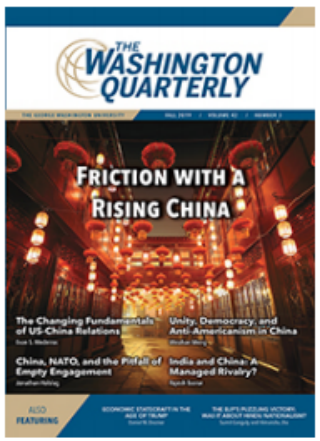
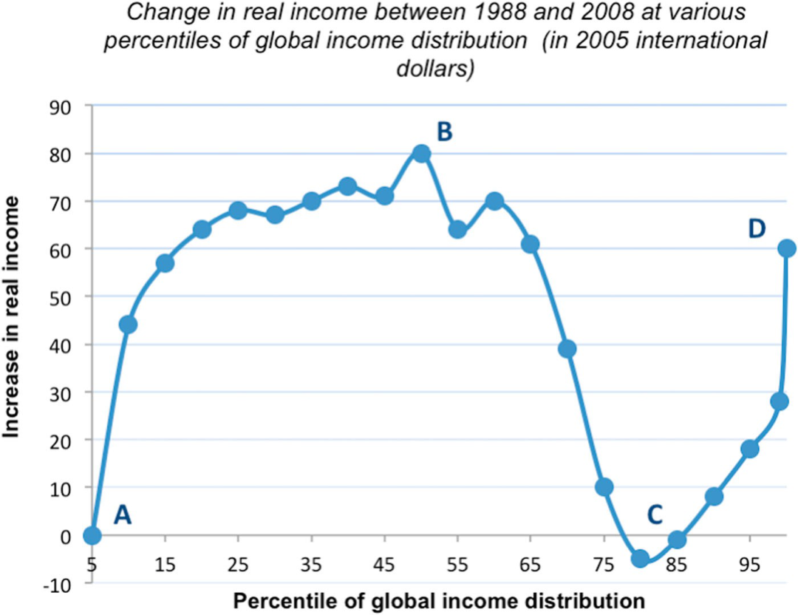

收录于合集

编者按
在当下许多国家社会两极分化和民粹主义势力兴起的背景下，旧的自由主义国际秩序受到了一定程度的冲击。未来，国际秩序将何去何从？三个派别对此各自持有不同的愿景。综合来看，本文作者所提出的“国际秩序实现政治可持续的三条标准”，在一定程度上平衡了国际合作与民族共同体、自由与平等。但究其实质，这种“不同形式的国际秩序”不过是三种愿景的折中方案。该方案能否有效解决争议问题仍然存疑。
作品简介
【作者】 Jeff D. Colgan，布朗大学政治科学系和沃森公共与国际事务研究所的理查德·霍尔布鲁克副教授。他的研究重点是国际秩序，特别是与能源和环境有关的国际秩序。他曾与世界银行(World Bank)、麦肯锡公司(McKinsey & Company)和布拉特尔集团(Brattle Group)合作。
【编译】 吕紫烟（国政学人编译员，山东大学东北亚学院）
【校对】 李 思
【审核】 姚寰宇
【排版】 杨 洋
【来源】 Jeff D. Colgan (2019) Three Visions of International Order, The Washington Quarterly , 42:2, 85-98,

期刊介绍
 美国华盛顿季刊（The Washington Quarterly）是国际事务的季刊杂志，由艾略特国际事务学院（乔治华盛顿大学）和泰勒弗朗西斯集团共同承办，分析全球战略变化和公共政策的影响等。该季刊主要内容包括：新兴大国、导弹防御系统、大规模杀伤性武器等，从全球视角来减少恐怖主义、地区问题。2018年影响因子为1.000。
国际秩序三愿景
Three Visions of International Order
Jeff D. Colgan
文章导读
2016年，英国脱欧公投和唐纳德·特朗普当选美国总统对自由主义国际秩序的支持者来说是一个巨大的打击。尽管自由秩序从某些方面来说取得了非凡的成功，它也开始变得弄巧成拙， 原因一方面是经济不平等的深化及随之而来的政治不平等，另一方面则是由于自满精英的政策失误。 从那时起，华盛顿出现了关于自由秩序的三大愿景。 第一种是坚持维护已有的秩序。第二种是将其摧毁——即，民粹主义者在许多国家的反抗（revolt）方式。第三种是进步主义者的反暴动（counter- revolt）。 一个国际秩序只有符合三条标准，才能在政治上实现可持续发展。 第一，它必须在自由主义社会中公开分享财富。第二，它必须利用国际合作。第三，它必须尊重民族共同体。 最近出现的三种彼此竞争的观点，每一种都至少有一条不符合上述标准。这表明我们这些关心国际秩序的人仍需努力。 我们应该追求一种非大一统（non- monolithic）形式的国际秩序，其具有以下特征：在某些关键事宜上薄弱的全球合作网络、自由民主国家之间更紧密的经济一体化“俱乐部模式”（club model）和一套支持国际开放的国家政策。
01
坚持已有的秩序
Clinging to Yesterday’s Order
第一个方案是维持1945年后的自由秩序。 这个秩序是以联合国（UN）、国际货币基金组织（IMF）、北大西洋公约组织（NATO）、欧盟（EU）和世界贸易组织（WTO）等机构为代表的一系列管理协定。
实际上，构成“自由主义国际秩序”（the liberal international order）的每一个单词都用词不当。 这种国际秩序在过去和现在常常是非自由的，尤其体现在南半球（包括非洲国家、拉丁美洲以及亚洲大部分地区）。直到约1990年，这一秩序才成为全球的秩序，之前仅仅存在于北大西洋。历史上，这一秩序常常是混乱无序的，当然也并非在一瞬间就建成。该秩序甚至具有误导性，因为它更像是秩序的集合而非一个统一的整体。尽管如此，这一术语象征着一种转变。二战后，一套由美国领导的制度曾支持自由民主国家并防止国际纷争。这一秩序在多方面取得了成功。首要的是，它维持了大国间的和平。自由秩序带来的稳定使许多国家放弃拥核。这一秩序也给欧洲战后重建和发展中国家发展提供了机遇，推动数十亿人口脱贫及中产阶级在世界范围内的迅速扩大。
然而，正是由于这些成功，该秩序的相关制度开始与其创始国的国内社会脱节。 特别是1980年之后，新自由主义经济议程侵蚀了提供重要政治支持的社会契约，这些政治支持对于自由秩序的长存至关重要。在美英等国，许多中产阶级和工人阶级选民有充分理由相信该体系是被幕后操纵的。那些分析并推崇全球化和自由秩序的人对民粹主义的兴起负有责任。资本主义控制了全球化，而我们却对此没有给予足够的重视。国际机构是由经济精英一手打造并为其自身服务的，这些经济精英与政府间建立了紧密的联系。普通人则被排除在外。2016年，破坏社会契约的代价在大西洋两岸显现。自那时起，民粹主义者的不满情绪持续不断。一个典型的例子就是法国和比利时的黄马甲（gilets jaunes）运动：从身穿黄色安全夹克或黄背心的人们反抗燃油税开始，已经演变成一场不连续但范围广泛的反精英政治运动。然而，许多中间派仍然没有意识到这点。制定外交政策的重要人物仍然在继续低估往日经济全球化的消极影响。 当然，经济因素并非民粹主义的唯一驱动因素。社会价值观、身份政治（identity politics）以及党派之争都起到了重要的推动作用。
如今，两股国际力量加剧了欧洲和北美地区两极分化和民粹主义高涨的态势。第一股力量是冷战结束导致民族团结的丧失。 在冷战时期里，假想敌苏联的威胁使得美国与盟国及其他多边机构之间形成了紧密的联系。社会心理学家强调了“他者”（othering）对个人和国家在身份建构（identity formation）过程中的重要性：明确谁不属于你的阵营会让你与阵营内部成员走的更近。苏联解体导致美国政治想象中主要的“他者”消失了，因而削弱了社会凝聚力。这件事对于共和党来说尤为棘手，因为他们一直是反对共产主义的堡垒。苏联解体后，共和党人的“祸根”逐渐从共产主义者转向“华盛顿精英们”。特朗普主义就是这一转变的逻辑延伸。
在欧洲，冷战的结束是由于某种不同的原因。在冷战期间，西欧领导人们一直试图避开共产主义和社会主义对国内的吸引。1989年后，各国政府和欧盟官员不再受此种限制，而更加注重技术专家治国，对国内民众的想法漠不关心。尽管一系列全面公投表达了对这一趋势的反对——这些反对之声本应被视为工人阶级日益不满的警告信号，但欧盟仍继续扩大其权力与规模。 这指向了第二股力量——多边越权（multilateral overreach）。 联合国和欧盟等机构能够推动合作、解决相互间的问题，但这样做需要各国在一定程度上限制自己的自主权。同所有机构的自然发展趋势一样，这些机构的权力也将不断扩大。每一次扩大，都有一些看似合理的理由。然而，国际权力不断扩张的积累效应会过度限制国家主权，还会给人一种外国势力正在控制他们生活的感觉。脱欧公投就是欧盟对各国关切缺乏回应所导致的后果。英国政客们给脱欧带来的彻底混乱，实际上可能会加强布鲁塞尔方面的傲慢和自满情绪，因为这会使得他们更加坚信，除了加入技术官僚型的欧洲机构外，各国没有其他可行的选择。多边机构绝不能想当然地认为选民别无选择，必须顺从多边机构的意愿。选民总是有选择的余地。
02
民粹主义者与民族主义
Populist—Nationalism
总而言之，自由秩序的失败在许多国家引发了民粹主义者的反抗，其中包括特朗普总统在华盛顿领导的反抗。这一反抗体现了上文所提到三种愿景中的第二种，即摧毁旧的自由秩序。这种方法存在很大的问题，但也应得到一定的赞赏。 特朗普主义（Trumpism）至少在四件大事上是正确的：中国与全球化的关系；同盟（如北约）的责任分担并不总是那么平均；在美国或欧洲大部分地区，经济一体化的成果没有得到很好的分配；即使特朗普总统和其他民粹主义者夸大了移民问题，并将其与种族主义和仇外心理相融合，但移民确实构成了挑战。 在政治层面，这种方法得益于关于全球化的叙述，其中包含了真理的内核。布兰科•米兰诺维克（Branko Milanovic）的“大象曲线”（Elephant Chart），如图1，显示了这一问题：在世界的某些地方，主要是中国和贫穷国家（B点）取得的经济进步与欧洲和北美工人（C点）的经济停滞（工人的实际收入减少或接近零增长）之间存在着巨大差距。当然，世界各地的富人也过得相当不错（D点）。
图1：全球收入增长分配“大象曲线”
因此， 民粹主义者对国际秩序的愿景带有民族主义特点， 在这种国际秩序中，各国自顾其暇。 富裕国家的工人（与国家经济发展）保持同步；多边合作薄弱而罕见；国际政治是事务性的，而不是基于国际关系。 这种做法存在严重缺陷，因为当我们需要更多国际合作的时候，它会使得一些国家退出。 若采取这种做法，两大风险将会马上显现。 首先是气候变化。 现在采取措施减少温室气体排放的成本远远不及人类给地球造成的损害。然而，我们并没有做到。部分原因在于，每个国家都指望其他国家率先行动，这样自己就不必承担过多成本。对于这个问题，民粹主义者和民族主义者没有回应，对我们时代的核心全球威胁也未作出解答。 第二个大风险是爆发大国战争的可能性越来越大。 民粹主义者支持思想强硬（tough- minded）的现实主义，但在某种意义上，思想强硬的现实主义是自我实现的。它削弱了国家之间的经济和非经济联系，营造了一种不信任的气氛。两次世界大战提醒人类：维持大国之间的和平需要开放的贸易网络、联合国等多边机构以及核威慑。显然，现实主义者的这种想法直接与上述战争教训背道而驰。从长远来看，这可能导致大国走向战争。除了这两大风险之外，还有许多其他风险相伴而行。自由民主国家需要西方对其他国家各种侵犯人权的行为作出一致的反应。特朗普的军国主义（militarism）是存在缺陷的，甚至缺乏合法性或多边主义特征，极有可能转变为政治学家巴里·波森（Barry Posen）口中的“非自由霸权”（illiberal hegemony）。特朗普总统对盟友的侮辱、欺凌和对道德价值观的漠视与前几届政府为实现“自由主义霸权”（liberal hegemony）所做的努力形成了鲜明对比——这种“自由主义霸权”将美国的领导地位及其合法性（至少在表面上）、对人权的尊重和对盟友的尊重相结合。美国需要处理好民主国家之间日益复杂的相互依存关系，以及与管理不当的中美贸易战有关的经济风险。在所有这些问题上，民粹主义者的外交政策会走入死胡同。
03
进步主义者的方案
Progressive Alternative
然而，民粹主义者的外交政策激发了由进步左翼人士提出的第三种外交政策愿景。 进步人士希望美国外交政策实现一长串改革， 包括：重申对盟友的承诺；重新加入《巴黎气候协定》（Paris climate agreement）和伊朗核协议（the Iran nuclear deal）等多边协议；从阿富汗和伊拉克撤军；在国际贸易谈判中给予劳工领导人一席之地；提升跨国资产流动透明度和遏制企业避税；保护选举程序免受外国势力干扰；取消针对富人的巨额减税政策（这些政策加剧了赤字，排挤了政府的其他优先事项）；重新承诺核不扩散和军备控制。进步人士在这个列表中做了很多正确的事情。最重要的是，他们明白， 在21世纪，外交政策和国内政策之间的分界线已经消失。 然而，进步人士也倾向于回避一些重大问题。 最典型的例子即 移民问题 ，进步人士几乎从未提起。由于进步派联盟内部在移民问题上有着不同的诉求，他们不愿意谈论这个问题。相比之下，民粹主义右翼势力对移民问题则有着清晰的态度：民粹主义者将犯罪、公共服务压力、人口结构变化和社会团结的丧失归咎于移民。这对大多数西方国家的相当一部分选民来说，极具吸引力。 恐惧和排外构成了强大的政治武器 ，而且有许多蛊惑人心的右翼政客懂得如何运用这些武器。民粹主义者的不满意情绪也并非都是种族主义与仇恨。 民粹主义者利用了维系民族文化的真诚愿望。 这种愿望是可以理解的，而且几乎在每个国家都能强烈地感受到。尽管，进步人士指出移民也丰富了民族文化，但毋庸置疑，随着时间的推移移民会改变民族文化。 真正的问题在于，如何平衡社会传统与社会革新。 除了移民之外，进步人士在 贸易问题 上也有点不合逻辑。总的来说，他们严厉指责一些国家偷走了美国的就业机会、违反了贸易规则，但他们却反对特朗普政府改革NAFTA和WTO的计划，他们总体上支持国际参与和对外开放。进步派政治家让选民们感到疑惑：他们到底想不想要贸易？他们尚未完全意识到， 贸易的合意程度在很大程度上取决于其贸易伙伴， 尤其是复杂经济体之间的贸易。良好的贸易依赖国家之间的信任关系，以及国内体系在一定程度上的兼容性。因此，如果我们回到一开始所描述的关于可持续秩序的标准，就会发现，这三种不同的愿景都至少有一条不符合该标准。坚持已有的自由秩序，无法实现财富近乎平均的分配，这丧失了国内对它的支持。民粹主义者的民族主义没有利用国际合作来应对全球相互依存的关键挑战，尤其是气候变化。而进步主义者的方案，尽管在强调保护选举不受干涉的问题上，远胜过大多数方案，但至少在移民问题上，它没有给予民族共同体充分的尊重。
04
朝着更好的方向前进
Toward a Better Way
那么，如何朝着更好的方向前进呢？国际秩序的设计原则可由其在政治上可持续的标准转化而来。 首先是利用多边合作力量的准则。 并非所有事宜都需要在全球层面上解决，但尽管存在分歧，作为国际社会我们必须共同应对一些问题。气候变化、军备控制、争端解决及维和、海洋保护和疾病大流行都是这类合作的候选领域。面对这些问题，自由民主国家必须找到与其他国家合作的共同基础。 第二步是制定贸易协定和 包括人员、货币和商品的流动的 其他形式的经济一体化， 以使自由社会的工人阶级共享财富。在实践中，这也许意味着将最惠国待遇（Most Favored Nation, MFN）原则与国内经济和法律制度的兼容性相联系。虽然自由民主国家可以且应该在某些领域与其他国家合作，但它们应将最强有力的合作形式留给其他自由民主国家。自由民主国家应该加紧对非自由社会的市场准入限制，这可能会令人感到遗憾，但却是一剂真正紧迫的良药。这样做主要是为了确保从一体化中获得的利益能够实现内部共享，并确保贸易协定不会损害工人阶级的利益和国家安全。然而，经济一体化的俱乐部模式附带了另一个重要的好处，即，带动更多国家实现自由化并维护法治。 第三个原则是尊重民族共同体。 这一原则可以具体落实到国内外的各领域政策中。如彻底转变美国的累退税（the regressive tax）削减政策，将这笔钱投入到终生学习计划中，以提高美国工人阶级的人力资本。在移民问题上，中间派和进步派必须形成关于支持有控制的移民（controlled immigration）的明确答案。完全开放边界的想法是不明智的，在政治上也是不可持续的。适度的移民能够丰富一个国家的物质和社会生活。随着时间的推移，移民应该能够通过自己的努力获得完全的公民身份，但这并不意味着他们需要从入境第一天起就完全享有福利国家的所有待遇。从更广阔的层面上说，国际合作的支持者必须传达一个简明的信息，以便与唐纳德·特朗普等民粹主义者相匹敌。民粹主义者有一个明确而适销对路的意识形态，其定义是强硬（toughness）、民族主义（nationalism,）和本土主义（nativism）。“美国优先”（America first）是一个强有力的口号。作为回应，国际合作的支持者也必须提供一个同样清晰、连贯的选择方案，而且必须为人类后代的未来提供一个具有吸引力的愿景。对民族共同体的尊重也影响了军事干预。美国过去对越南、阿富汗、伊拉克和利比亚的军事干预应该被视为一个巨大的教训，其他国家也有自己的民族共同体，而且“修复”起来十分不易。国家重建需要难得的环境和资源。鉴于这一现实，更多的自律和更少的干预似乎更加明智。然而，自律并不要求完全放弃正式和非正式联盟。 把这三个要素放在一起——应对全球挑战的薄弱的合作网络、自由民主国家间更紧密的经济一体化俱乐部模式、支持国际开放的国家政策——一种不同形式的国际秩序就形成了。 冷战后的单极时代已经结束，美国承担不起世界秩序的大统一愿景。随着中国、俄罗斯和其他国家的参与，没有哪个国家能够独自主导这一秩序。成功的合作将会是差异化的合作。
05
将愿景付诸实践
Putting Visions into Practice
实现这一愿景需要巧妙的政治战略。如今，民族主义思想卷土重来。这种意识形态或许永远不会被彻底击败。总会有一些人想通过歪曲国家身份以达到自己的目的。现在进步人士、中间派及自由主义者都在争取民族认同政治的斗争中发起了进攻。内部和外部挑战并存。新的方法可以应对这些挑战。一个将市场竞争与社会团结相结合的社会，将为企业提供自由、民主、多元主义和发展空间。这种模式极具吸引力，而且行之有效。

本文由国政学人独家编译推荐，文章观点不代表本平台观点，转载请联系授权。

添加 “国小政”微信，获取最新资讯


好好学习，天天“在看”

国政学人
支持学术公益与知识传播
微信扫一扫赞赏作者 __赞赏
已喜欢，对作者说句悄悄话
取消 __
发送给作者
发送
最多40字，当前共字
上一页 1/3 下一页
长按二维码向我转账
支持学术公益与知识传播
受苹果公司新规定影响，微信 iOS 版的赞赏功能被关闭，可通过二维码转账支持公众号。